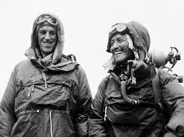
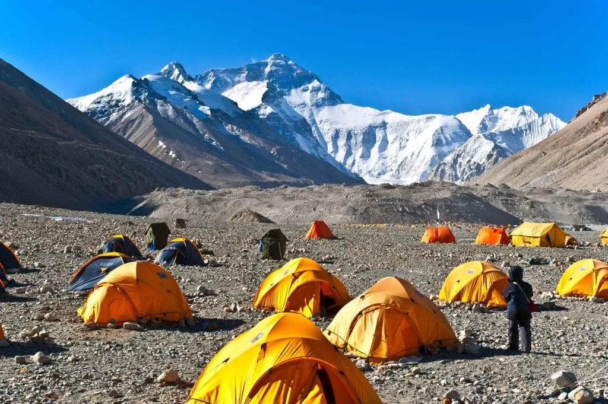
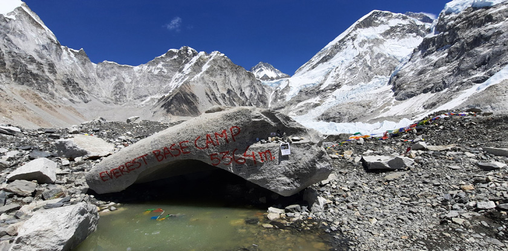
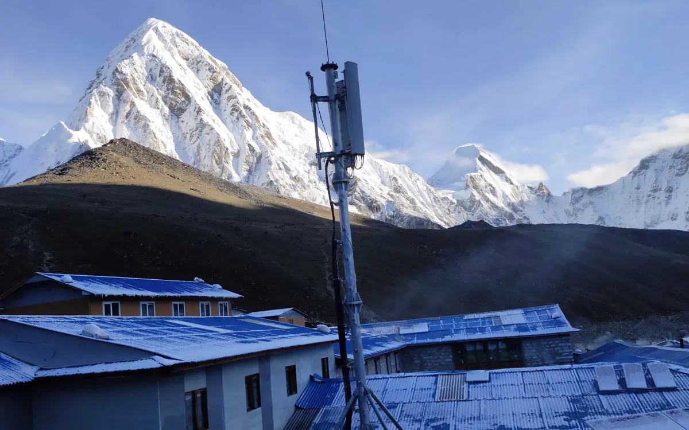
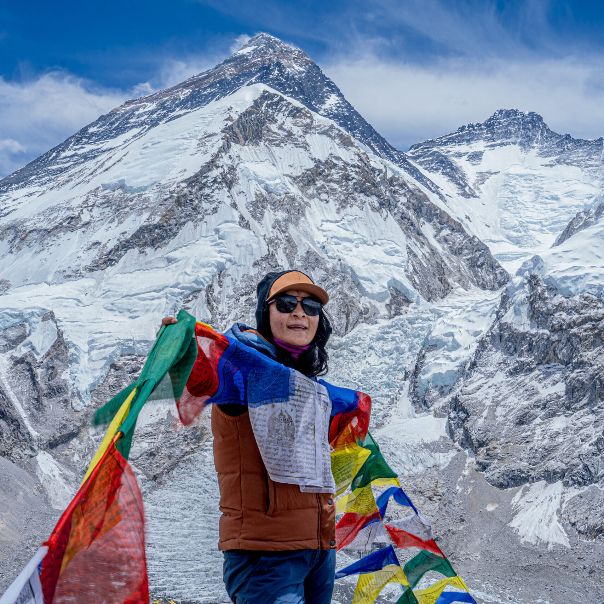

Description

Mount Everest is the highest mountain in the world, standing at 8,848.86 meters (29,031.7 feet) above sea level. It is located in the Himalayas on the border between Nepal and the Tibet Autonomous Region of China. Known as Sagarmatha in Nepal and Chomolungma in Tibet, it is one of the most famous and challenging mountains to climb.
First Climber

Everest was first successfully summited on May 29, 1953, by Sir Edmund Hillary of New Zealand and Tenzing Norgay, a Sherpa of Nepal. Since then, thousands of climbers have attempted to reach the peak, facing extreme weather, avalanches, high-altitude sickness, and the harsh conditions of the "Death Zone" (above 8,000 meters), where oxygen levels are dangerously low.
Best Time to Climb

Despite its dangers, Everest remains a dream destination for mountaineers worldwide, symbolizing human endurance and adventure. The standard climbing routes are the South Col route (from Nepal) and the North Col route (from Tibet). The best time to climb is typically during the pre-monsoon (spring) season in April–May or post-monsoon (autumn) in September–October.
Mount Everest is Still Growing

Despite its dangers, Everest remains a dream destination for mountaineers worldwide, symbolizing human endurance and adventure. The standard climbing routes are the South Col route (from Nepal) and the North Col route (from Tibet). The best time to climb is typically during the pre-monsoon (spring) season in April–May or post-monsoon (autumn) in September–October.
4G WIFI

Despite its dangers, Everest remains a dream destination for mountaineers worldwide, symbolizing human endurance and adventure. The standard climbing routes are the South Col route (from Nepal) and the North Col route (from Tibet). The best time to climb is typically during the pre-monsoon (spring) season in April–May or post-monsoon (autumn) in September–October.
WORLD RECORD
